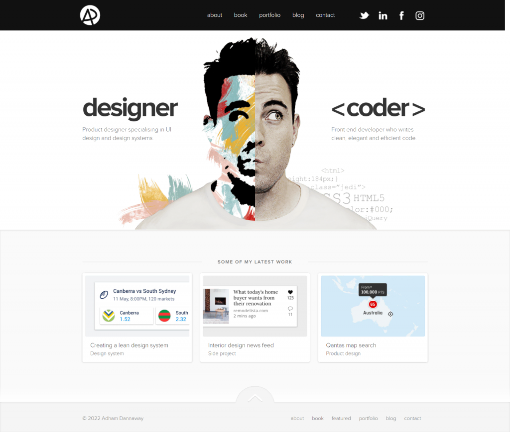
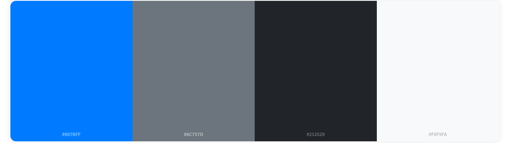
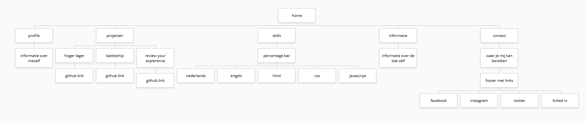

Omschrijving van de Portfolio Website
Deze portfolio website is ontworpen om mijn vaardigheden, projecten en persoonlijke informatie te tonen. Het doel is om een professioneel imago te creëren en potentiële werkgevers of klanten een overzicht te geven van mijn werk.
Screenshot van Inspiratie
Kleurenschema
Hieronder is een screenshot van het kleurenschema dat in de website wordt gebruikt:
- Primair: #007bff (Blauw)
- Sekundair: #6c757d (Grijs)
- Achtergrond: #212529 (Donker Grijs)
- Tekst: #f8f9fa (wit)
Sitemap
Hieronder is een screenshot van de sitemap van de website:
